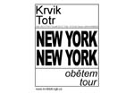
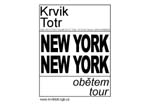
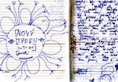
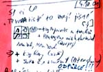
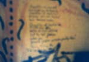

|
 |
retrokruh krvik totr |
|
 |
retrokruh krvik totr |
|
  |
|
2001: Krvik Totr odpočívali a začali studovat každý něco jiného – jeden hereckou školu, druhý školu tvůrčího psaní. Dohromady to pak dalo zásadní přeorientování na divadlo. Na podzim truchlili za New York na „obětem tour“. |
|
Vražda v Orient expresu • mp3 (Vražda poklimbává v kupé. Přijde průvodčí a zapne sampl vlaku. Přichází Číňan a sedá si proti Vraždě – ta se probudí) Číňan
(usmívá se a se sepjatýma ručičkama se ukloní. Na stůl si
vybalí krabici rychlovarné rýže) Vražda
(na půl huby): Bon jour. (Poklimbává dál, spíš
se vrtí) (Seděj,
mlčej) Číňan: Promiňte, jsem hnusnej, nejste náhodou stará Vražda? Vražda (kouká, kdo to na ni vlastně mluví. Pak přemýšlí o té větě): Ouiiiiia nejseš ty náhodou starej Hnusnej Číňan? Číňan: Kví. Promiň, jsem hnusnej. Jsem hnusnej Číňan. Vražda: Teda, to je let... Číňan: No to bude dýl. Vražda:
Ba oui, aspoň šedesát roků... (Na stolku má francouzské víno,
ovívá se vějířem) Číňan: Pamatuješ na starý dobrý...? (Oba radostně povzdechnou, zahledí se do stropu a s úsměvem usnou. Chrú pší) Průvodčí (vtrhne do coupé. Vytrhnou se): Dobrý den, jsem průvodčí ex machina. Číňan (úklona): Jsem starej Hnusnej Číňan. Vražda (koketně se ovívá) Číňan: A toto je má stará přítelkyně stará Vražda. Vražda: Bon jour... (Podá hajlově ruku, na niž však chce ve skutečnosti polibek – má bílé rukavičky) Průvodčí
(reaguje na hajl salutováním – pak pochopí a ruku políbí) Průvodčí: Přistúpili? Vražda: Oui, oui – přistúpili. Číňan (úklona): Přistúpili. Průvodčí: V pořádku. (Odchází) Vražda: Vypadáš dobře, starej Hnusnej Číňane. Číňan (s úklonou a úsměvem): Ovšem ty vypadáš zašle. Promiň, jsem hnusnej. Vražda: Pamatyješ na starou raš-plí? Číňan (úklona): Ano. Vražda: Skončila ve starým železe. Číňan (úklona): Myslil jsem, že jsí taký dávno tuhá – promiň, jsem hnusnej. Vražda: Žijy pořád dál a dál. No problem. Číňan: Proč jsi tedy nebyla na mý setiny? Psal jsem ti dopis. Vražda: Ne parlé pas Kinés, mon dieu! Číňan: Promiň, jsem hnusnej. Vražda: A proč ty jsi nepřijel na moje sentinel?!? Číňan (úklona): Promiň, jsem hnusnej. (Vchází průvodčí) Průvodčí: Takže přistúpili? Číňan (úklona): Přistúpili. Vražda: Oui, oui, přistúpili. Průvodčí: Takže jízdenky. Číňan (úklona): Takže jízdenky. Vražda: Oui, oui, jízdenky. Průvodčí (zblblej): Takže v pořádku. (Odchází) Vražda: Mon dieu, dala bych si un bagette. Číňan (nabízí): Rýži? Vražda: Mon dieu, rýži bych si nedala! Číňan: Tak nežer. Promiň, jsem hnusnej. Vražda: Teda Hnusnej Číňane, v tvým věku, pořád de formijé, to bych tedy nečekala... – Ty jsi snad ještě hnusnější, než li jsi bejval. Číňan (milión úklon): Náš velký King Kong Mao Ce-tung mě naučil. (Zasněně) Tam, nad Chuang-che che che che che... (Směje se do sebe. Pak ručičky k nebi) Promiň, jsem hnusnej, můj Mao... (Zaregistruje ze své komunistické výšiny starou Vraždu) Kam vlastně, stará Vraždo? Vražda: Domů, důchodců, Paris, Ill de Cité... Průvodčí (vchází): Takže jízdenky! Číňan (úklona): Takže jízdenky. Vražda: Oui, oui, jízdenky. Průvodčí: Takže ukázat! Číňan (horlivě natahuje ruku za průvodčího): Ukázat. Vražda: Oui, oui, ukázat (Ukáže vějířem) Průvodčí
(zmateně se otáčí a odchází, lehce se ještě přiotočí a
zasalutuje) Číňan: A co jsi dělala celý ty leta, co jsem ti nechal byt? Vražda: Prvních dvacet let jsem žila sama. Ale to víš – samá ženská... Nakonec jsem do toho praštila. Číňan: S kým? Vražda: Potkala jsem starou Vojnu... Číňan: Tu padavku? Promiň, jsem hnusnej. Vražda: ...a do roka byla veselka. Číňan: A to jste museli? Promiň, jsem hnusnej. Vražda (zamyšlená, hnusotu Číňanovu navykle přehlíží) V jedenaosmdesáti nebylo na děti ani pomyšlení. Máme ale spolu pět pravnoučat. Průvodčí (vchází): Takže ukažte jízdenky. (Ksichtěj se jako radky) Takže nemáte. Číňan (úklona): Nemáme. Vražda: Oui, oui, nemáme. Průvodčí: Takže občanky. (Radky) Takže nemáte. Číňan (úklona): Nemáme. Vražda: Oui, oui, nemáme. Průvodčí: Takže ven. Číňan (úklona): Takže ven. (Vstanou, hrdě kráčej kolem průvodčího pryč – Číňan se stále modlí, Vražda doň komicky zavěšena) Číňan: Zas to nevyšlo, stará Vraždo. Vražda: Oui, oui, starej hnusnej Číňane, nevyšlo... Průvodčí
(sleduje jejich odchod – vypne sampl vlaku – pak se jako
vykloní z okénka): Vodjézd! © 2001 Bouillon/Faquire |
Z dobového tisku: Krvik
Totr – uctívači Ginga Muži v černém, tak vypadali Krvik Totr v New Yorku, kam po 11. září přijeli uctít památku Ginga, psa, kterého jeden z debilních mrtvých hasičů vzal s sebou do WTC. Zatímco celý svět roní slzy po lidech a Rákosníčkovi pomalu přetéká rybník (pozor, aby z toho za rok v srpnu nebyly povodně!), Krvik Totr jediní vyslechli sedmnáctihodinový apel Marty Kubišové a ronili kvůli Gingovi. Gingo, Martin čtyřnohý mrtvý kamarád, je teď mrtvý. Kdyby ten jeho blbý majitel hasič byl, někdo z Krvik Totr by ho zabil. Krvik Totr byli tryznou za Ginga tak dojati, že přeci jen pookřáli i k lidem – a zorganizovali bombastické „obětem tour“, úspěšné zvláště na Mnichovicku. Výtěžek zeminy z této humanitární akce poputuje Krvik Totr na chaty a vily. Prosím, kdo ještě máte nějaké peníze, pošlete je Krvik Totr, protože je smrt Ginga opravdu ronila – a navíc Petrovi chybí pd zrcadlem nějaké hezké barokní hodiny (které by mu připomínaly Ginga každou bimnutu). Děkujeme všem! |
© 2003 Krvik Totr Limity.